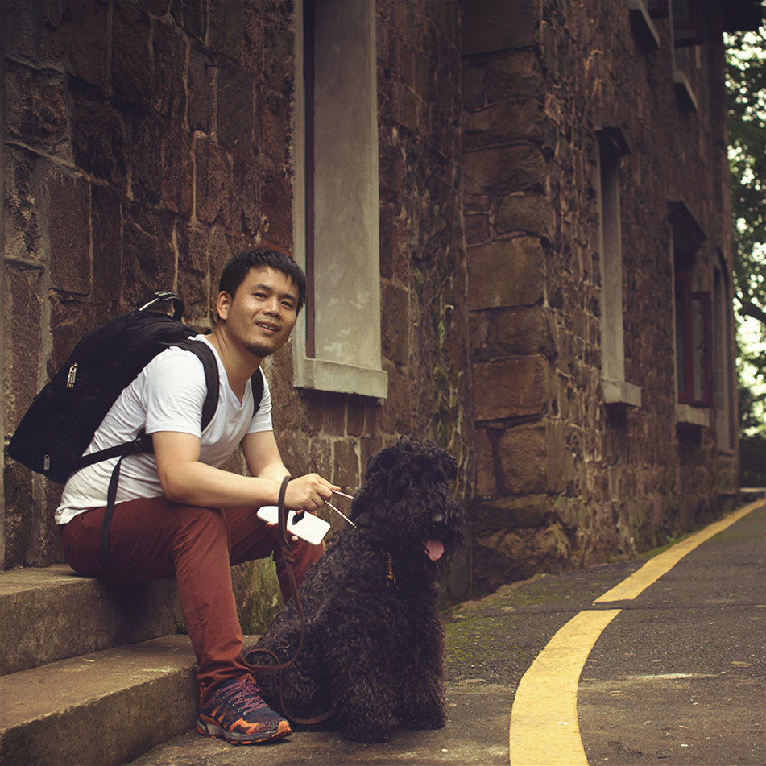

Updated ：2021-03-31 14:07:47
+ Director, JD.com, 2017-07 2019-05 + M3/Senior Manager Responsible for the vehicle BU technical team, the head of quality team、 supply chain team which totally over 100 members.
+ MBA, ZheJiang University, 2016-09 2019-03 + Top 80’s of over 2000 candidates. As a member of Financial Track, learn more on quant and economic lessons besides basic MBA courses. + Won the reward of outstanding graduate students of the School of Economics and Management and Zhejiang University.
+ Director, Tqmall.com, 2014-7 2017-06 + Within 6 months, I helped the company quickly establish a warehousing logistics system covering 22 warehouses across China, supporting a salement and customer service with monthly GMV of hundreds of millions, and a CRM system serving nearly 500 sales, and guiding the company's system architecture upgrade.
+ Founder, HugeSand Ltd, HangZhou, 2013-10 2014-07 + App Caijisong’s APP market has received more than 40,000 downloads in more than two months, completed the company’s organization, product design, development and launch, and initial market expansion within four months, and has rapidly grown into an starup entrepreneur in more than half a year.
+ Tech Manager, Business Security Tech Ltd, 2012-3 2013-10 + Starting from scratch, I completed the formation of the Internet entrepreneurial technical team, product planning, development and testing, and push online, helping the company to obtain tens of millions of investment.
+ Founder, Busibridge Beijing Ltd, 2007-03 2011-10 + As a domestic localization partner of Compirce, I have opened up a path for open source ERP, made some beneficial attempts on open source software, and released a batch of open source software.
+ Vice Manager, Huitu Beijing Ltd, 2004-10 2006-11 + Participated in the National Consultation System for Flood Control and Drought Relief, and won the second prize for scientific and technological progress from the Ministry of Water Resources. Responsible for OO design and GIS map developement.
+ R&D team leader, China Mobile, 1999-05 2003-06 + Experienced multiple telecom-level projects: Responsible for the overall OA system of Hebei Province with 12 million RMB, completed the first and second phases in more than two years, participated in 70 million data mining projects.
+ Information Management Mayor, North China University of Technology, 1996-1999 + It is my pride to get the Public Student qualification at the last chance. + I have studied computer-oriented courses such as advanced mathematics, linear algebra, calculation methods, carding analysis, discrete mathematics, computer principles, compiling principles, C language, HTML and others. I was vice president of the student union for 2 years.